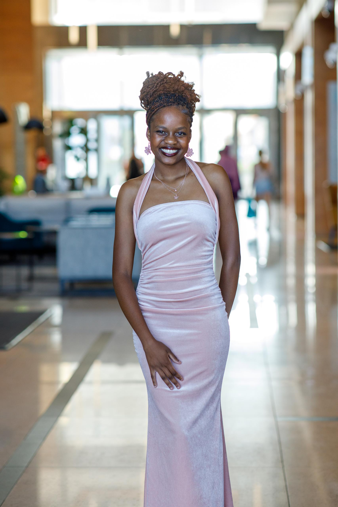

The person
behind the site.

Hi! I'm Rufaro Chipoyera — a third-year BSc Computer Science student at the University of the Western Cape in Cape Town. I started this site when I only knew HTML, as a way to document my journey into web development. What better way to learn than by doing?
I'm originally from Zimbabwe and moved to Cape Town for university. I did not plan to study Computer Science — I wanted something Math-heavy and thought I'd transfer. Turns out CS is basically a glorified Math degree, so I stayed, fell in love with it, and forgot to apply for the transfer.
I'm a Dean's List student (twice over, Summa Cum Laude), placed 1st in my Data Structures module with 97%, and competed nationally in the Student Cluster Competition where my team came 3rd — which earned me a spot representing South Africa at the International Supercomputing Conference (ISC). I also co-founded UWC's High Performance Computing Club to bring that world to more students.
Beyond tech, I tutor — both university DSA students and high school Cambridge syllabus students. I lead the UWC Mathematics Club which provides free tutoring and food drives during exams. I care a lot about giving back, especially to students who are where I was a few years ago.
On the creative side: graphic design has been my hobby for a while and I'm slowly working towards making something of it. I also have a first-class personality, which is unfortunately not on my CV.